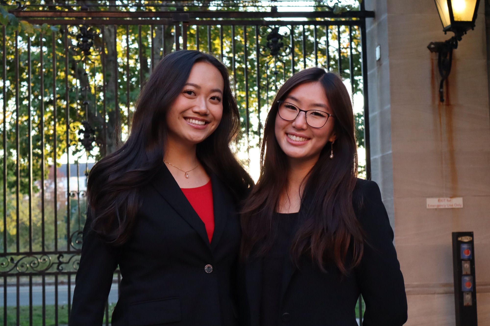
Summer Sun is a senior in Dunster from Chico, California, studying Government. She loves kimchi, the color red, putting Lao Gan Ma on anything she eats, and bathroom stall doors that open out instead of in.
Lily is a senior in Dunster concentrating in Neuroscience on the biology track. In her free time, she enjoys being outside, drawing, and rewatching Studio Ghibli movies. She loves Laufey and cats!
Audrey Sun is a junior from Massachusetts studying Physics and English. She loves playing violin, reading, watching rom coms, and she is so good at eating hot pot.
Claire Grumbacher is a junior from New York City studying Psychology and Anthropology. She adores creating new recipes at the dining hall, trying out various cuisines, and CSA!
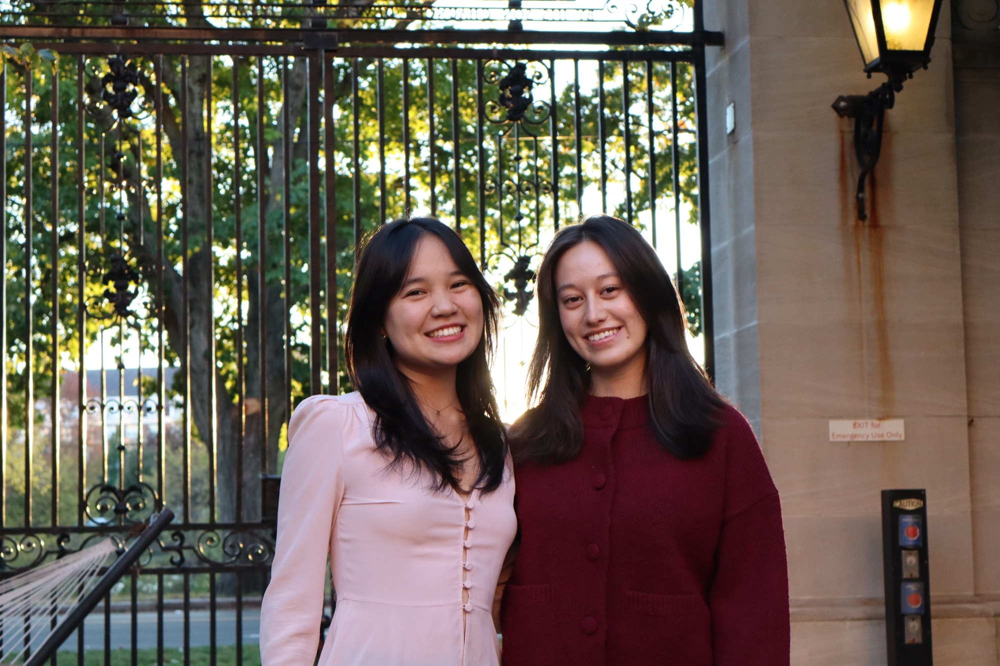
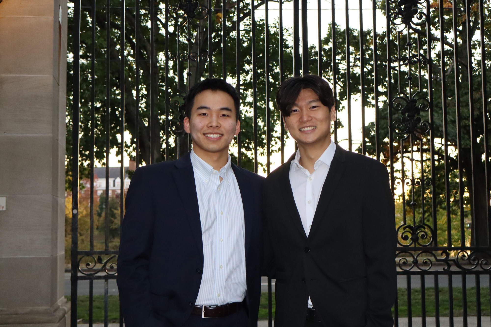
Yan Bo Lin is a sophomore studying Archaeology and Integrative Biology. He can ride a unicycle, a scooter, and your mom.
Dean forgot to fill out the form...
Patrick is a sophomore from Lansing, Kansas in DUNSTERRRR house. You’ll frequently find Patrick going to the gym while listening to Megan Thee Stallion, doodling on their iPad instead of studying, or playing Pokemon rom hacks in the comfort of their room.
Olivia is a sophomore originally from Appleton, Wisconsin. In her free time, she enjoys dancing, cafe-hopping, and sidequesting with friends!
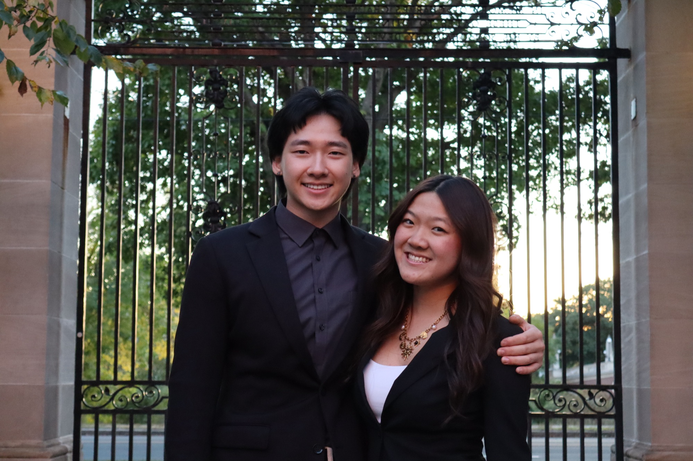
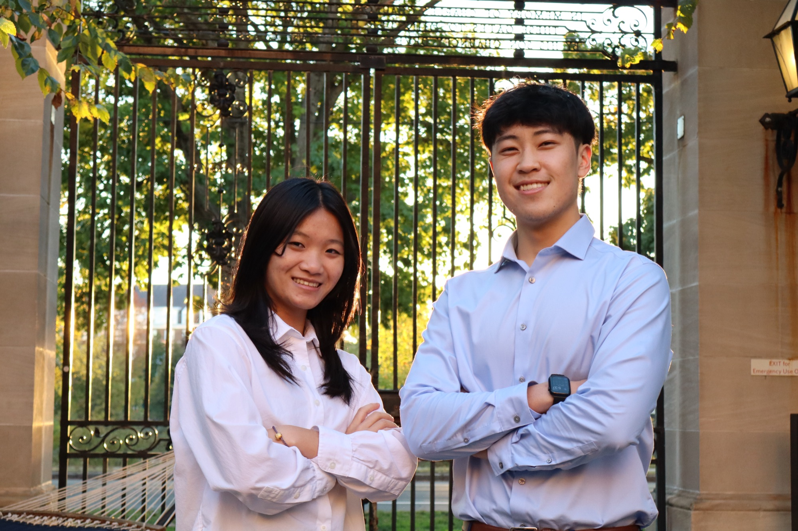
Justin is a sophomore from San Francisco, California, and he spends his time doodling in class, exploring with his girlfriend at Wellesley, and overall shirking a large portion of his responsibilities.
Adalia Wen is a sophomore from Weston, MA, planning to concentrate in Social Studies with secondaries in Economics and Philosophy. She likes performatively reading the news, learning about Chinese tea tasting, and filling her iphone storage with candids of her friends.
William is a sophomore from Hong Kong concentrating in Environmental Science and Public Policy. He’s a wildlife photographer and a scuba diver who also loves to play the guitar!
Tony is a sophomore in Lowell House from Chicago, IL. He spends his free time golfing, cooking, and enjoying the outdoors. He loves exploring different cuisines.
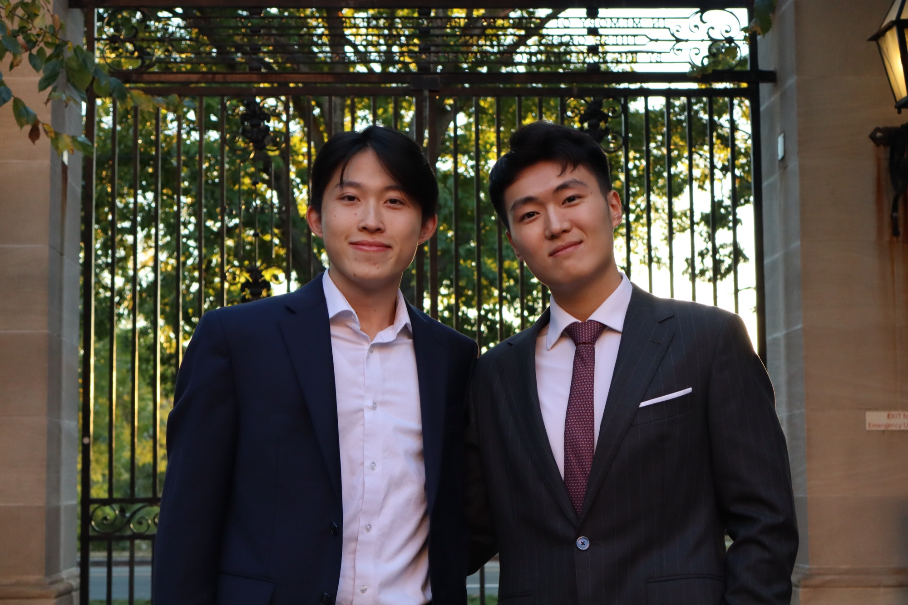
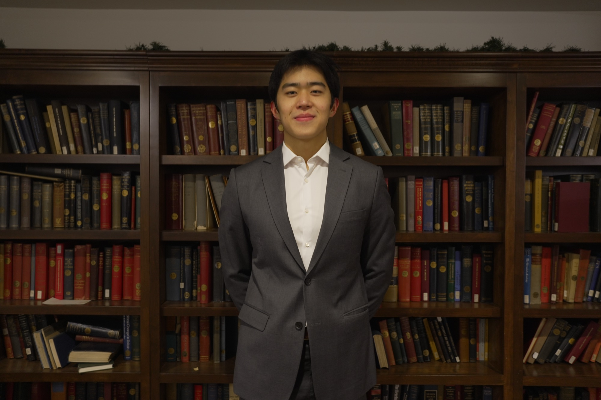
Eric is a junior in Mather concentrating in Computer Science and Mathematics. His top three favorite foods are dumplings, wontons, and El Monterey Chicken & Cheese Taquitos.
Jian is a junior from Madison, Wisconsin. He spends his free time maintaining/repairing bikes, trying to learn jazz piano, watching Kung fu panda, and gambling away jolly ranchers in friendly bouts of poker.
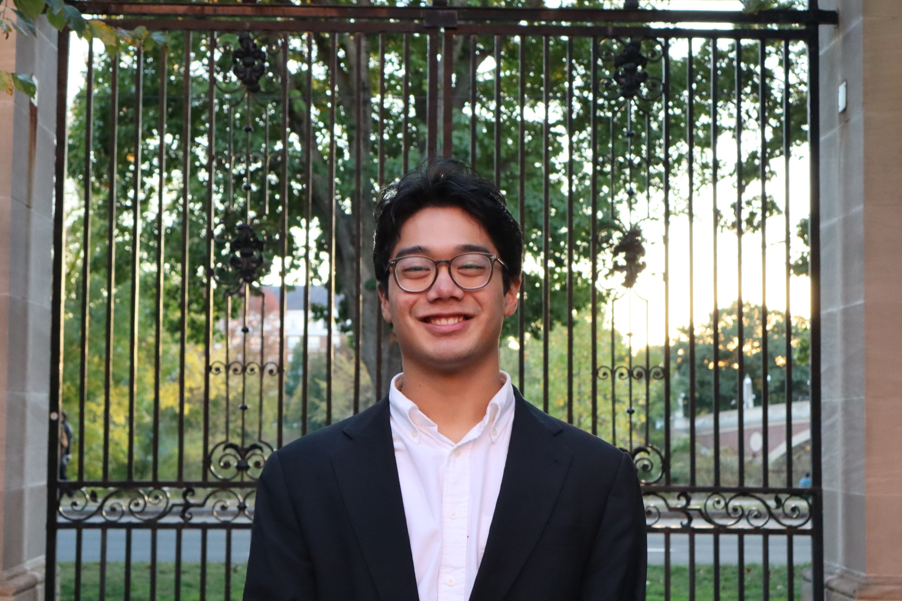
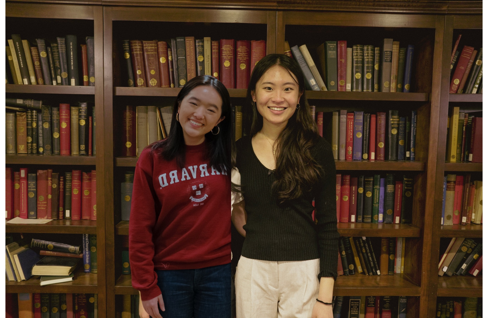
Angela is a junior studying computer science, economics, and government! She loves rapidly consuming comedy-action shows or NFL/NBA compilations, playing board games, eating any food, and yapping and side questing with family and friends!
Chloe Zhan is a junior in Currier studying Applied Mathematics and Economics with a secondary in Computer Science. She loves exploring museums, reading, and wasting all her money trying new cafes around Boston!
Kathy Zhao is a sophomore planning to study Sociology and Statistics. She is a big fan of The Good Place, persimmons, fencing, and playing guitar.
Leanna forgot to fill out the form...
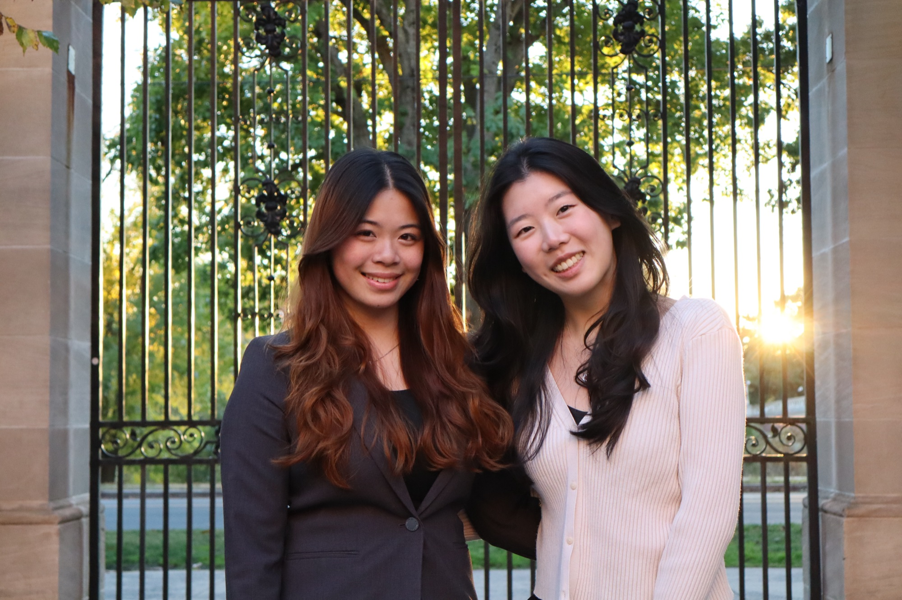
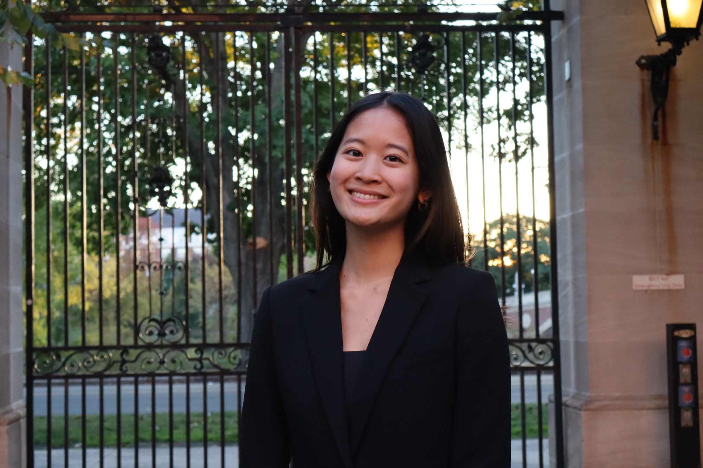
Alex is a junior from Sharon, Massachusetts studying Physics, Math, and CS. He loves CSA and Chinese people and all other people.
Allison is a senior in Winthrop studying Economics and Psychology. In her free time, she loves exploring new restaurants and work out studios with friends, frolicking in museums, or picnicking by the Charles River (when weather permitting).
Rachel is a junior from New York City concentrating in Bioengineering. She loves skateboarding, the color navy, jamming out to songs, building mechanical keyboards, and spontaneous trips to Berryline (cookies and cream with black raspberry!)
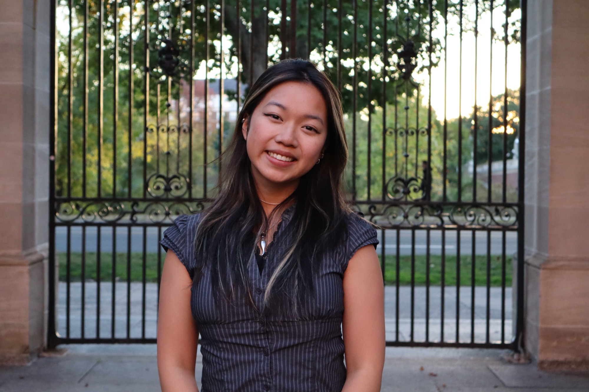
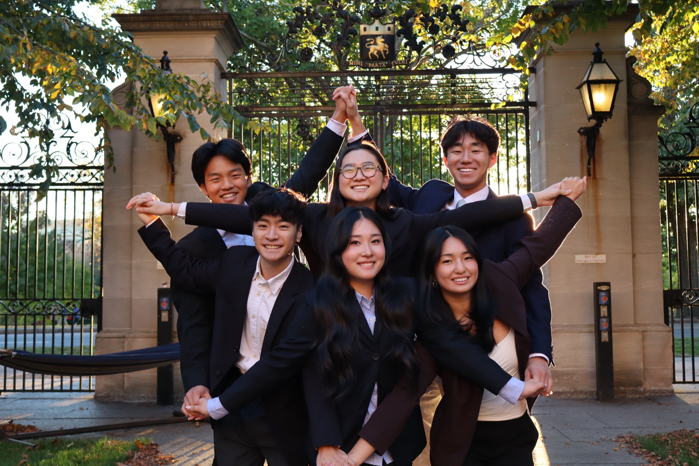
Ray Zhang is a first-year from Falmouth, MA planning on studying Mechanical Engineering. He loves tennis, hand drumming along to any song, and getting a full 7.5 hours of sleep every night.
Vicky is a first-year from Papillion, Nebraska who has no idea what she wants to study. She loves rock climbing, keeping up her 2000+ day Duolingo streak, and wearing her bright pink slides & shiesties around campus.
Anran is a first-year from Needham, MA planning on studying Molecular and Cellular Biology on the pre-med track. He loves running, finding new restaurants, and sidequesting with his friends, and he guarantees he is a bigger Noah Kahan fan than you.
Keith Xin is a freshman from Chicago planning on studying Chemistry on the pre-med track. In his free time he likes getting food with friends, exploring new cities, and spending time with his pug Winston.
Tina is (obviously) a first-year from Newburgh, New York with concepts of a plan to study government & economics. When she’s not chained to her computer, she’s hogging the mic during karaoke, doing tarot readings for her friends, or grinding for primos on genshin impact. Please ask her about newjeans!
Joanna Ouyang is a freshman from Oakland, Michigan hoping to study Human Developmental & Regenerative Biology on the pre-med track. She loves eating dimsum, binging TV shows, and playing Crossy Road (high score 1172!)